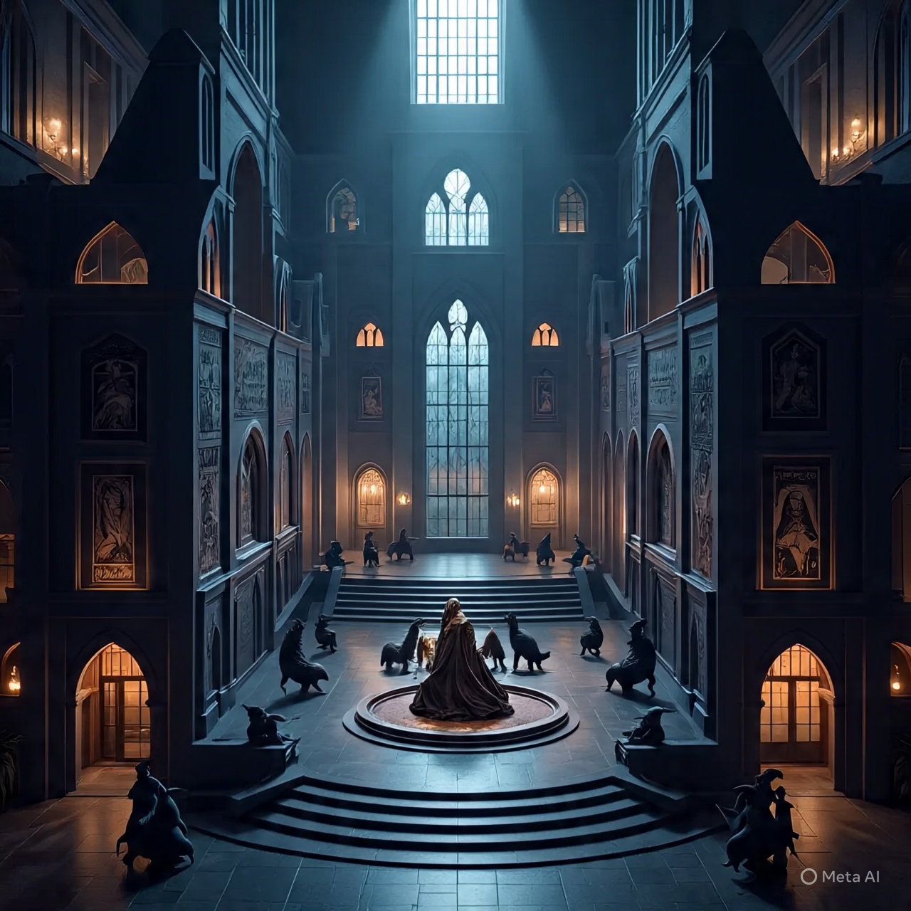

Acerca del Gimnasio Unova
El Gimnasio Unova de tipo Siniestro y Fantasma es un edificio imponente y enigmático, ubicado en el corazón de la ciudad de Nacrene. La estructura es una mezcla de arquitectura moderna y gótica, con torres altas y ventanas en forma de arco que parecen ojos misteriosos. La fachada está cubierta de piedra negra pulida, que refleja la luz de la luna y crea un efecto de sombra y luz que parece bailar en la oscuridad.
Al entrar, se siente una atmósfera de misterio y expectación, como si el edificio mismo estuviera esperando a que los entrenadores se atrevan a desafiar al líder del gimnasio. El interior es lujoso y oscuro, con paredes adornadas con tapices y símbolos extraños que parecen tener un significado oculto. La iluminación es tenue, pero suficiente para iluminar los detalles del edificio y crear un ambiente de suspense.
En general, el Gimnasio Unova de tipo Siniestro y Fantasma es un lugar donde la oscuridad y el misterio se mezclan con la elegancia y la sofisticación, y solo los entrenadores más valientes y astutos podrán superar el desafío y obtener la medalla correspondiente.
